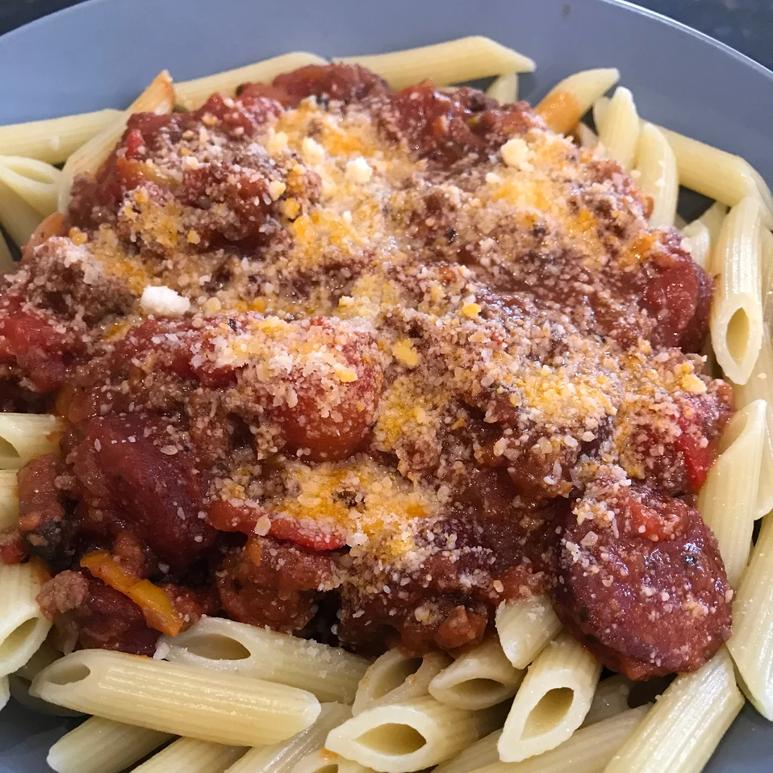

Pasta Sauce with Italian Sausage

Italian Sausage - The way Grandma used to make. Topped with Delicious Pasta Sauce
Spicy Italian sausage, tomatoes, garlic,
and a touch of a fresh bay leaf make this recipe a winner.
I love Italian food and especially spaghetti sauce and sweet sausage!
Italian is the ultimate comfort food and tomato sauce simmered building that rich
delicious sauce that Italian grandmothers love to make.
- 1 pound Italian sausage links
- ½ pound lean ground beef
- 1 tablespoon olive oil
- 1 onion, chopped
- 1 clove garlic, chopped
- 1 (16 ounce) can canned tomatoes
- 1 (15 ounce) can canned tomato sauce
- 1 teaspoon salt
- ¼ teaspoon ground black pepper
- 1 teaspoon dried basil
- 1 teaspoon dried oregano
- 1 bay leaf
Steps
- Removed casing from sausage links and cut into 1/2 inch slices.
In a large skillet, brown sausage over medium heat for about
10 minutes; remove and set aside.
- In a large skillet, heat ground beef, olive oil, garlic and
onion over medium heat until meat is nicely browned; drain.
- Pour in tomatoes and tomato sauce; mix in salt, ground black pepper,
basil, oregano, bay leaf and cooked sausage. Simmer uncovered for 1 hour,
stirring occasionally.
- Bring a large pot of lightly salted water to a boil.
Add pasta and cook for 8 to 10 minutes or until al dente; drain.
- Mix cooked sauce with hot pasta and remove bay leaf from sauce before serving.